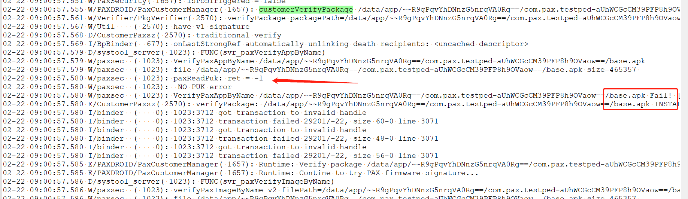
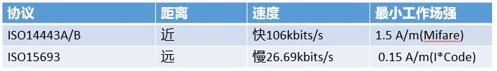
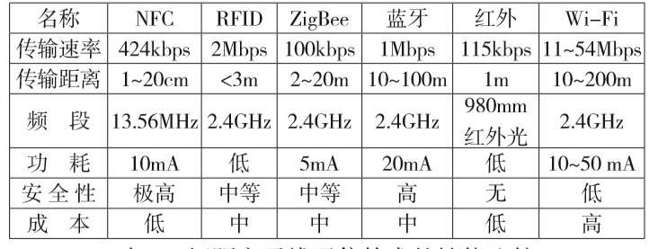

概述¶
nfc,Near Field Communication,NFC是一种短距高频的无线电技术，NFCIP-1标准规定NFC的通信距离为10厘米以内，运行频率13.56MHz，传输速度有106Kbit/s、212Kbit/s或者424Kbit/s三种。NFCIP-1标准详细规定NFC设备的传输速度、编解码方法、调制方案以及射频接口的帧格式，此标准中还定义了NFC的传输协议，其中包括启动协议和数据交换方法等。
使用了NFC技术的设备（例如移动电话）可以在彼此靠近的情况下进行数据交换，是由非接触式射频识别（RFID）及互连互通技术整合演变而来的，通过在单一芯片上集成感应式读卡器、感应式卡片和点对点通信的功能。
NFC工作原理¶
nfc是基于RFID,Radio Frequency Identification发展起来的技术
RFID¶
射频识别（RFID）是 Radio Frequency Identification 的缩写。其原理为阅读器与标签之间进行非接触式的数据通信，达到识别目标的目的.
例如,小区的门禁卡系统,汽车的无接触钥匙等
RFID 工作原理¶
一个RFID系统的组成,至少需要2部分,大多数需要3部分.
一个读卡设备,PCD,也叫VCD.一个标签或者卡片,PICC,也叫VICC.一个服务器端.
例如饭堂饭卡,饭堂读卡设备,还有管理饭卡金额的服务器端.这个情景是3个部分组成RFID系统
或者饭卡直接存的金额数据,读卡设备直接做加减法运算,那就只需要2个部分组成RFID系统
RFID的工作原理就一句话：电子标签与阅读器之间通过耦合元件实现射频信号的空间(无接触)耦合、在耦合通道内，根据时序关系，实现能量的传递、数据的交换。根据耦合方式可将工作原理分为两种模型：
变压器模型,依据电磁感应定律,通过空间高频交变磁场实现耦合.电感耦合方式一般适合于中、低频工作的近距离射频识别系统.
雷达原理模型,发射出去的电磁波，碰到目标后反射，同时携带回目标信息，依据的是电磁波的空间传播规律。电磁反向散射耦合方式一般适合于高频、微波工作的远距离射频识别系统。
以上两种模型,都需要PCD不断发射电磁场出去.
RFID的工作频段
RFID标签可以分为低频(LF)、高频(HF)、超高频(UHF)和微波等不同种类。低频(125KHz)、高频(13.56MHz）、超高频（850MHz～910MFz）。
每一种频率都有它的特点，被用在不同的领域，因此要正确使用就要先选择合适的频率。
从频段划分可以看出来，NFC在频段上，属于RFID众多频段中的一个，他们是从属关系。

NFC 常见协议¶
NFC技术是符合ISO18092、ISO21481标准，兼容ISO14443、ISO15693等射频标准。
ISO 14443和ISO 15693二者皆以13.56MHz交变信号为载波频率：ISO15693读写距离较远，当然这也与应用系统的天线形状和发射功率有关；
ISO14443定义了TYPE A、TYPE B两种类型协议。通信速率为106kbits/s，它们的不同主要在于载波的调制深度及位的编码方式。下表为两种协议的对比，在具体的应用场景中具体使用什么协议需要综合考虑。

NFC¶
NFC 设备种类¶
无源NFC设备¶
无源nfc设备包括nfc标签和其他小型发射器,他们可以向其他nfc设备发送信息,而不需要电源,
但是不能处理来自其他源的信息,也不能连接其他无源设备.
对应下一章节的nfc工作模式中的被动模式
NFC 工作模式¶
被动模式¶
被动模式中NFC发起设备(也称为主设备)需要供电设备，主设备利用供电设备的能量来提供射频场，并将数据发送到NFC目标设备(也称作从设备)，传输速率需在106kbps、212kbps或424kbps中选择其中一种。
从设备不产生射频场，所以可以不需要供电设备，而是利用主设备产生的射频场转换为电能，为从设备的电路供电，接收主设备发送的数据，并且利用负载调制(load modulation)技术，以相同的速度将从设备数据传回主设备。
因为此工作模式下从设备不产生射频场，而是被动接收主设备产生的射频场，所以被称作被动模式，在此模式下，NFC主设备可以检测非接触式卡或NFC目标设备，与之建立连接。
主动模式¶
主动模式中，发起设备和目标设备在向对方发送数据时，都必须主动产生射频场，所以称为主动模式，它们都需要供电设备来提供产生射频场的能量。
这种通信模式是对等网络通信的标准模式，可以获得非常快速的连接速率
NFC 主要应用模式¶
P2P¶
针对点对点形式来讲，其关键指的是把两个均具有NFC功能的设备进行连接，从而使点和点之间的数据传输得以实现。
经过把点对点形式作为前提，让具备NFC功能的手机与计算机等相关设备，真正达成点对点的无线连接与数据传输，并且在后续的关联应用中，不仅可为本地应用，同时也可为网络应用。
因此，点对点形式的应用，对于不同设备间的迅速蓝牙连接，及其通信数据传输方面有着十分重要的作用
读卡器模式¶
读/写模式，这种模式下NFC设备作为非接触读写器使用。
例如支持NFC的手机在与标签交互时扮演读写器的角色，开启NFC功能的手机可以读写支持NFC数据格式标准的标签。
读卡器模式的NFC通信作为非接触读卡器使用，可以从展览信息电子标签、电影海报、广告页面等读取相关信息。
卡模拟形式¶
模拟卡片模式，这种模式就是将具有NFC功能的设备模拟成一张标签或非接触卡，例如支持NFC的手机可以作为门禁卡、银行卡等而被读取。
各种无线通信比较¶

NFC 数据标准¶
不同的NFC标签之间差异很大，有的只支持简单的读写操作，有时还会采用支持一次性写入的芯片，将NFC标签设计成只读的。
当然，也存在一些复杂的NFC标签，例如，有一些NFC标签可以通过硬件加密的方式限制对某一区域的访问。
还有一些标签自带操作环境，允许NFC设备与这些标签进行更复杂的交互。这些标签中的数据也会采用不同的格式。
Android nfc 数据 标准,NDEF¶
android sdk 主要支持 NFC论坛标准（Forum Standard）,这种标准被称为 NDEF, NFC Data Exchange Format,
Android SDK API支持如下3种NDEF数据的操作
从NFC标签读取NDEF格式的数据
向NFC标签写入NDEF格式的数据
通过Android Beam技术将NDEF数据发送到另一部NFC设备
NDEF¶
NEDF格式 ,包含如下
NdefMessage：描述NDEF格式的信息，实际上我们写入NFC标签的就是NdefMessage对象
NdefRecord：描述NDEF信息的一个信息段，一个NdefMessage可能包含一个或者多个NdefRecord